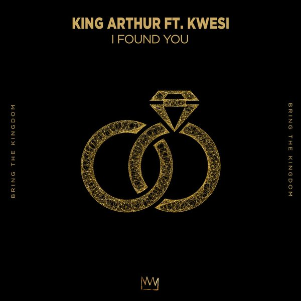
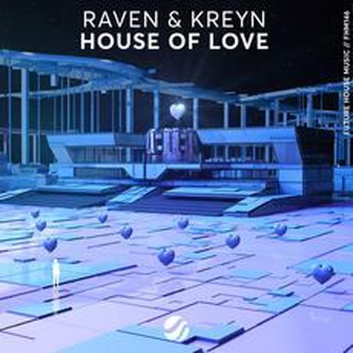

I 22 dischi
 1
Beats PumpinMilk Bar
1
Beats PumpinMilk Bar
 2
Play it by earOffaiah
♪
3
Feat MrGee - ElektroDynoro And Outwork
2
Play it by earOffaiah
♪
3
Feat MrGee - ElektroDynoro And Outwork
 4
In Your Eyes (Club Mix)Nora En Pure
4
In Your Eyes (Club Mix)Nora En Pure
 5
Arpe (Tube & Berger Extended Remix)Raumakustik
5
Arpe (Tube & Berger Extended Remix)Raumakustik
 6
Jerkin'David Penn & KPD
6
Jerkin'David Penn & KPD
 7
Cardboard BoxD.O.D
7
Cardboard BoxD.O.D
 8
It Won't Stop MeARTY X NK
8
It Won't Stop MeARTY X NK
 9
GirlKC Lights
9
GirlKC Lights
 10
Oh Baby (Youngr Bootleg)Seizo
10
Oh Baby (Youngr Bootleg)Seizo
 11
I’m Not In Love ft. Scarlett O’GradyValiant
11
I’m Not In Love ft. Scarlett O’GradyValiant

12 I Found You ft. KwesiKing Athur 13
Help Me No MoreKPLR x USAI
13
Help Me No MoreKPLR x USAI

14 House Of Love Extended_MixRaven & Kreyn 15
No Problems (Extended Mix)Andrea Marino, Stereoliez
15
No Problems (Extended Mix)Andrea Marino, Stereoliez
 16
Party On My Own (feat. FAULHABER)Alok & Vintage Culture
16
Party On My Own (feat. FAULHABER)Alok & Vintage Culture
 17
Shed My SkinBingo Players & Oomloud
17
Shed My SkinBingo Players & Oomloud
 18
Let Me GoAlok & KSHMR
♪
19
Hypnotized (Dj Vincenzino Mashup)Purple Disco Machine, Sophie And The Giants
♪
20
Fascinated By You (Mattei & Omich Feat Ella Rmx)Mattei & Omich, Ella
18
Let Me GoAlok & KSHMR
♪
19
Hypnotized (Dj Vincenzino Mashup)Purple Disco Machine, Sophie And The Giants
♪
20
Fascinated By You (Mattei & Omich Feat Ella Rmx)Mattei & Omich, Ella
 21
All 4 Love feat. Tasty Lopez (Extended Mix)Mark Knight, Rene Amesz, Tasty Lopez
21
All 4 Love feat. Tasty Lopez (Extended Mix)Mark Knight, Rene Amesz, Tasty Lopez
 22
Raggadagga (Original Mix)Claude VonStroke, Catz 'n Dogz
22
Raggadagga (Original Mix)Claude VonStroke, Catz 'n Dogz
La tracklist
- 1 Beats Pumpin Milk Bar Total Freedom Recordings
- 2 Play it by ear Offaiah Defected Records
- 3 Feat MrGee - Elektro Dynoro And Outwork motivo
- 4 In Your Eyes (Club Mix) Nora En Pure Enormous Tunes
- 5 Arpe (Tube & Berger Extended Remix) Raumakustik Spinnin' Records
- 6 Jerkin' David Penn & KPD Armada Music
- 7 Cardboard Box D.O.D Armada Music
- 8 It Won't Stop Me ARTY X NK Armada Music
- 9 Girl KC Lights Toolroom Records
- 10 Oh Baby (Youngr Bootleg) Seizo Armada Music
- 11 I’m Not In Love ft. Scarlett O’Grady Valiant Time Machine
- 12 I Found You ft. Kwesi King Athur BRING THE KINGDOM
- 13 Help Me No More KPLR x USAI Hexagon
- 14 House Of Love Extended_Mix Raven & Kreyn etichetta ignota
- 15 No Problems (Extended Mix) Andrea Marino, Stereoliez Night Service Only
- 16 Party On My Own (feat. FAULHABER) Alok & Vintage Culture CONTROVERSIA
- 17 Shed My Skin Bingo Players & Oomloud Spinnin' Records
- 18 Let Me Go Alok & KSHMR CONTROVERSIA
- 19 Hypnotized (Dj Vincenzino Mashup) Purple Disco Machine, Sophie And The Giants Mashup
- 20 Fascinated By You (Mattei & Omich Feat Ella Rmx) Mattei & Omich, Ella Moon Rocket Music
- 21 All 4 Love feat. Tasty Lopez (Extended Mix) Mark Knight, Rene Amesz, Tasty Lopez Toolroom Records
- 22 Raggadagga (Original Mix) Claude VonStroke, Catz 'n Dogz Armada Music